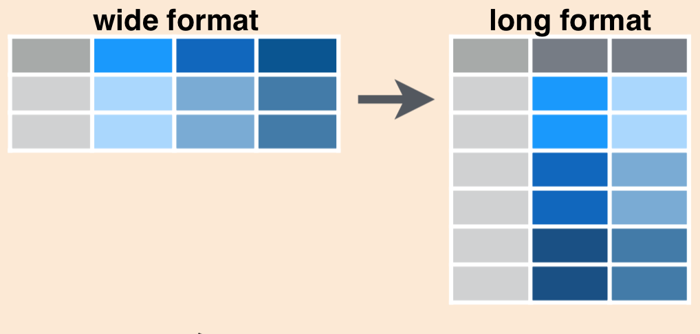
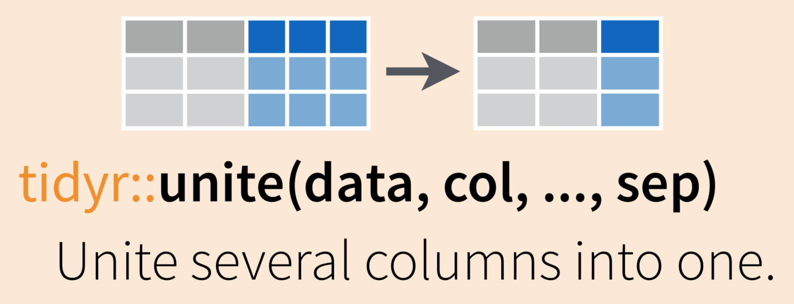
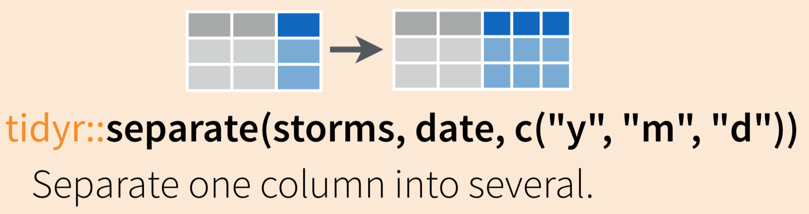

Chapter 7 Tidying
7.1 Summary
In previous sessions, we learned to read in data, do some wrangling, and create a graph and table.
Here, we’ll continue by reshaping data frames (converting from long-to-wide, or wide-to-long format), separating and uniting variable (column) contents, and finding and replacing string patterns.
7.1.1 Tidy data
“Tidy” might sound like a generic way to describe non-messy looking data, but it is actually a specific data structure. When data is tidy, it is rectangular with each variable as a column, each row an observation, and each cell contains a single value (see: Ch. 12 in R for Data Science by Grolemund & Wickham).

7.1.2 Objectives
In this session we’ll learn some tools to help make our data tidy and more coder-friendly. Those include:
- Use
tidyr::pivot_wider()andtidyr::pivot_longer()to reshape data frames janitor::clean_names()to make column headers more manageabletidyr::unite()andtidyr::separate()to merge or separate information from different columns- Detect or replace a string with
stringrfunctions
7.1.3 Resources
– Ch. 12 Tidy Data, in R for Data Science by Grolemund & Wickham
- tidyr documentation from tidyverse.org
- janitor repo / information from Sam Firke
7.2 Set-up
7.2.1 Create a new R Markdown and attach packages
- Open your project from Day 1 (click on the .Rproj file)
- PULL to make sure your project is up to date
- Create a new R Markdown file called
my_tidying.Rmd - Remove all example code / text below the first code chunk
- Attach the packages we’ll use here (
library(package_name)):tidyverseherejanitorreadxl
Knit and save your new .Rmd within the project folder.
7.2.2 read_excel() to read in data from an Excel worksheet
We’ve used both read_csv() and read_excel() to import data from spreadsheets into R.
Use read_excel() to read in the inverts.xlsx data as an objected called inverts.
Be sure to explore the imported data a bit:
7.3 tidyr::pivot_longer() to reshape from wider-to-longer format
If we look at inverts, we can see that the year variable is actually split over 3 columns, so we’d say this is currently in wide format.
There may be times when you want to have data in wide format, but often with code it is more efficient to convert to long format by gathering together observations for a variable that is currently split into multiple columns.
Schematically, converting from wide to long format using pivot_longer() looks like this:

We’ll use tidyr::pivot_longer() to gather data from all years in inverts (columns 2016, 2017, and 2018) into two columns:
- one called year, which contains the year
- one called sp_count containing the number of each species observed.
The new data frame will be stored as inverts_long:
# Note: Either single-quotes, double-quotes, OR backticks around years work!
inverts_long <- pivot_longer(data = inverts,
cols = '2016':'2018',
names_to = "year",
values_to = "sp_count")The outcome is the new long-format inverts_long data frame:
## # A tibble: 165 x 5
## month site common_name year sp_count
## <chr> <chr> <chr> <chr> <dbl>
## 1 7 abur california cone snail 2016 451
## 2 7 abur california cone snail 2017 28
## 3 7 abur california cone snail 2018 762
## 4 7 abur california spiny lobster 2016 17
## 5 7 abur california spiny lobster 2017 17
## 6 7 abur california spiny lobster 2018 16
## 7 7 abur orange cup coral 2016 24
## 8 7 abur orange cup coral 2017 24
## 9 7 abur orange cup coral 2018 24
## 10 7 abur purple urchin 2016 48
## # … with 155 more rowsHooray, long format!
One thing that isn’t obvious at first (but would become obvious if you continued working with this data) is that since those year numbers were initially column names (characters), when they are stacked into the year column, their class wasn’t auto-updated to numeric.
Explore the class of year in inverts_long:
## [1] "character"That’s a good thing! We don’t want R to update classes of our data without our instruction. We’ll use dplyr::mutate() in a different way here: to create a new column (that’s how we’ve used mutate() previously) that has the same name of an existing column, in order to update and overwrite the existing column.
In this case, we’ll mutate() to add a column called year, which contains an as.numeric() version of the existing year variable:
Checking the class again, we see that year has been updated to a numeric variable:
## [1] "numeric"7.4 tidyr::pivot_wider() to convert from longer-to-wider format
In the previous example, we had information spread over multiple columns that we wanted to gather. Sometimes, we’ll have data that we want to spread over multiple columns.
For example, imagine that starting from inverts_long we want each species in the common_name column to exist as its own column. In that case, we would be converting from a longer to a wider format, and will use tidyr::pivot_wider().
Specifically for our data, we’ll use pivot_wider() to spread the common_name across multiple columns as follows:
## # A tibble: 33 x 8
## month site year `california con… `california spi… `orange cup cor…
## <chr> <chr> <dbl> <dbl> <dbl> <dbl>
## 1 7 abur 2016 451 17 24
## 2 7 abur 2017 28 17 24
## 3 7 abur 2018 762 16 24
## 4 7 ahnd 2016 27 16 24
## 5 7 ahnd 2017 24 16 24
## 6 7 ahnd 2018 24 16 24
## 7 7 aque 2016 4971 48 1526
## 8 7 aque 2017 1752 48 1623
## 9 7 aque 2018 2616 48 1859
## 10 7 bull 2016 1735 24 36
## # … with 23 more rows, and 2 more variables: `purple urchin` <dbl>, `rock
## # scallop` <dbl>We can see that now each species has its own column (wider format). But also notice that those column headers (since they have spaces) might not be in the most coder-friendly format…
7.5 janitor::clean_names() to clean up column names
The janitor package by Sam Firke is a great collection of functions for some quick data cleaning, like:
janitor::clean_names(): update column headers to a case of your choosingjanitor::get_dupes(): see all rows that are duplicates within variables you choosejanitor::remove_empty(): remove empty rows and/or columnsjanitor::adorn_*(): jazz up tables
Here, we’ll use janitor::clean_names() to convert all of our column headers to a more convenient case - the default is lower_snake_case, which means all spaces and symbols are replaced with an underscore (or a word describing the symbol), all characters are lowercase, and a few other nice adjustments.
For example, janitor::clean_names() would update these nightmare column names into much nicer forms:
My...RECENT-income!becomesmy_recent_incomeSAMPLE2.!test1becomessample2_test1ThisIsTheNamebecomesthis_is_the_name2015becomesx2015
If we wanted to then use these columns (which we probably would, since we created them), we could clean the names to get them into more coder-friendly lower_snake_case with janitor::clean_names():
## [1] "month" "site"
## [3] "year" "california_cone_snail"
## [5] "california_spiny_lobster" "orange_cup_coral"
## [7] "purple_urchin" "rock_scallop"And there are other case options in clean_names(), like:
- “snake” produces snake_case (the default)
- “lower_camel” or “small_camel” produces lowerCamel
- “upper_camel” or “big_camel” produces UpperCamel
- “screaming_snake” or “all_caps” produces ALL_CAPS
- “lower_upper” produces lowerUPPER
- “upper_lower” produces UPPERlower
7.6 tidyr::unite() and tidyr::separate() to combine or separate information in column(s)
Sometimes we’ll want to separate contents of a single column into multiple columns, or combine entries from different columns into a single column.
For example, the following data frame has genus and species in separate columns:
We may want to combine the genus and species into a single column, scientific_name:
Or we may want to do the reverse (separate information from a single column into multiple columns). Here, we’ll learn tidyr::unite() and tidyr::separate() to help us do both.
7.6.1 tidyr::unite() to merge information from separate columns
Use tidyr::unite() to combine information from multiple columns into a single column (as for the scientific name example above)

To demonstrate uniting information from separate columns, we’ll make a single column that has the combined information from site abbreviation and year in inverts_long.
We need to give tidyr::unite() several arguments:
- data: the data frame containing columns we want to combine (or pipe into the function from the data frame)
- col: the name of the new “united” column
- the columns you are uniting
- sep: the symbol, value or character to put between the united information from each column
inverts_unite <- inverts_long %>%
unite(col = "site_year", # What to name the new united column
c(site, year), # The columns we'll unite (site, year)
sep = "_") # How to separate the things we're uniting## # A tibble: 6 x 4
## month site_year common_name sp_count
## <chr> <chr> <chr> <dbl>
## 1 7 abur_2016 california cone snail 451
## 2 7 abur_2017 california cone snail 28
## 3 7 abur_2018 california cone snail 762
## 4 7 abur_2016 california spiny lobster 17
## 5 7 abur_2017 california spiny lobster 17
## 6 7 abur_2018 california spiny lobster 167.6.1.1 Activity:
Task: Create a new object called ‘inverts_moyr’, starting from inverts_long, that unites the month and year columns into a single column named “mo_yr”, using a slash “/” as the separator. Then try updating the separator to something else! Like “hello!”.
Solution:
inverts_moyr <- inverts_long %>%
unite(col = "mo_yr", # What to name the new united column
c(month, year), # The columns we'll unite (site, year)
sep = "/") Merging information from > 2 columns (not done in workshop)
tidyr::unite() can also combine information from more than two columns. For example, to combine the site, common_name and year columns from inverts_long, we could use:
# Uniting more than 2 columns:
inverts_triple_unite <- inverts_long %>%
tidyr::unite(col = "year_site_name",
c(year, site, common_name),
sep = "-") # Note: this is a dash## # A tibble: 6 x 3
## month year_site_name sp_count
## <chr> <chr> <dbl>
## 1 7 2016-abur-california cone snail 451
## 2 7 2017-abur-california cone snail 28
## 3 7 2018-abur-california cone snail 762
## 4 7 2016-abur-california spiny lobster 17
## 5 7 2017-abur-california spiny lobster 17
## 6 7 2018-abur-california spiny lobster 167.6.2 tidyr::separate() to separate information into multiple columns
While tidyr::unite() allows us to combine information from multiple columns, it’s more likely that you’ll start with a single column that you want to split up into pieces.
For example, I might want to split up a column containing the genus and species (Scorpaena guttata) into two separate columns (Scorpaena | guttata), so that I can count how many Scorpaena organisms exist in my dataset at the genus level.
Use tidyr::separate() to “separate a character column into multiple columns using a regular expression separator.”

Let’s start again with inverts_unite, where we have combined the site and year into a single column called site_year. If we want to separate those, we can use:
7.7 stringr::str_replace() to replace a pattern
Was data entered in a way that’s difficult to code with, or is just plain annoying? Did someone wrongly enter “fish” as “fsh” throughout the spreadsheet, and you want to update it everywhere?
Use stringr::str_replace() to automatically replace a string pattern.
Warning: The pattern will be replaced everywhere - so if you ask to replace “fsh” with “fish”, then “offshore” would be updated to “offishore”. Be careful to ensure that when you think you’re making one replacement, you’re not also replacing something else unexpectedly.
Starting with inverts, let’s any place we find “california” we want to replace it with the abbreviation “CA”:
ca_abbr <- inverts %>%
mutate(
common_name =
str_replace(common_name,
pattern = "california",
replacement = "CA")
)Now, check to confirm that “california” has been replaced with “CA”.